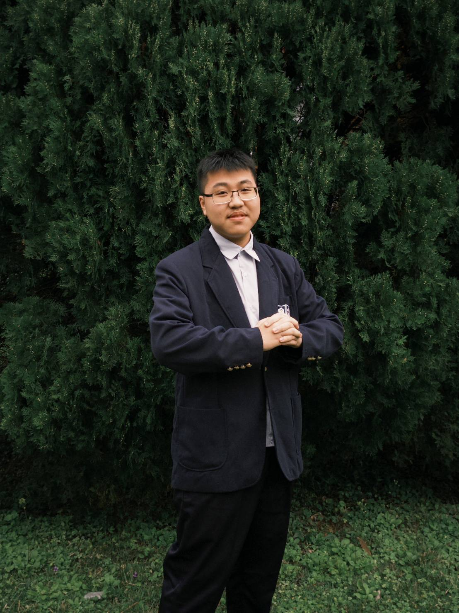
When I took Mr. Su Wen-Kui’s elective course for the first time, I learned about the International Schools CyberFair competition. We would need to build a website, which felt quite challenging. After careful discussion, we decided to participate. Although I did not contribute much to the website-building side, I was able to help with collecting information and writing part of the website content. On several occasions, we visited Chi Wen-Hao, the President of the Alumni Association. Through the interviews, I learned some basic reporting principles—for example, you must be clear about the topic, think through what questions to ask in advance, anticipate how the other person might respond, and, if the response is different from what you expected, adapt on the spot. That process also included some fun and unexpected moments. The chairman also shared a line with us: “Be able to yield, be able to endure, be able to teach, be able to wait” emphasizing perseverance, tolerance, and communication—exactly the life experience I still lack. This was an unprecedented competition experience for me. If I have the chance to participate again, I would like to do it again.
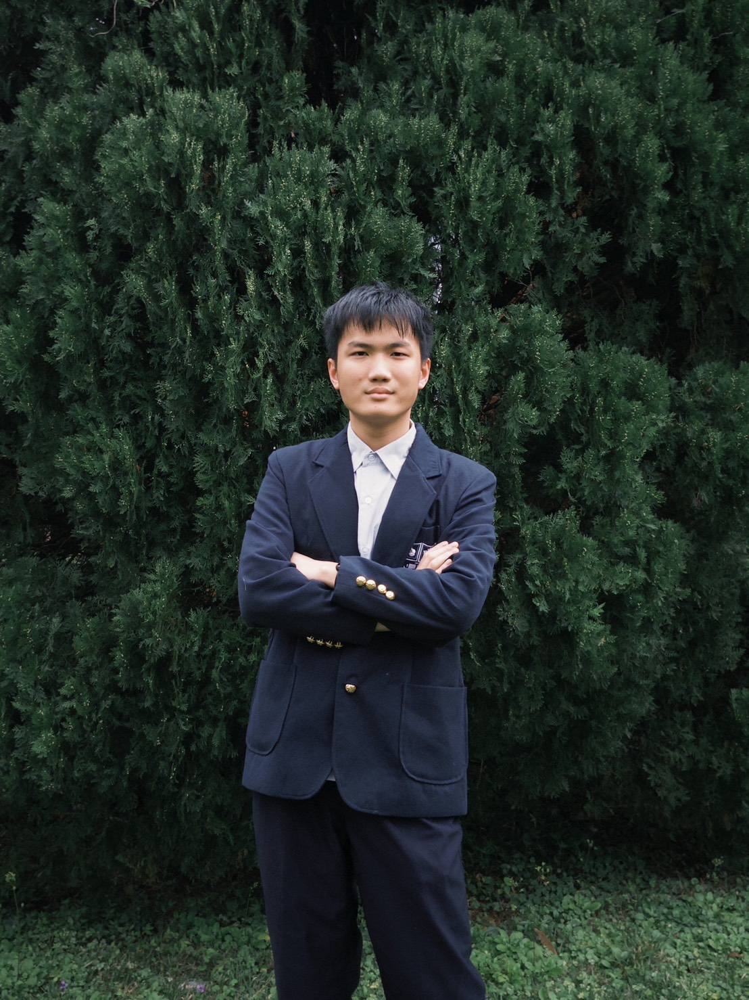
Being able to take part in the “International Schools CyberFair” was truly special. I am also very grateful for the support of our advising teacher, Mr. Su, who helped us organize and preserve Mr. Chi Wen-Hao’s story in a complete way. During our research, we explored Tamsui’s past together through Mr. Chi’s experiences and found that it differs greatly from the present. This made us realize how important it is to document history. From organizing materials to conducting interviews and discussing the website, every step required teamwork, and I learned new skills and methods along the way. I hope that through our website, everyone can not only get to know Mr. Chi Wen-Hao, but also feel the warmth and human touch of Tamsui.
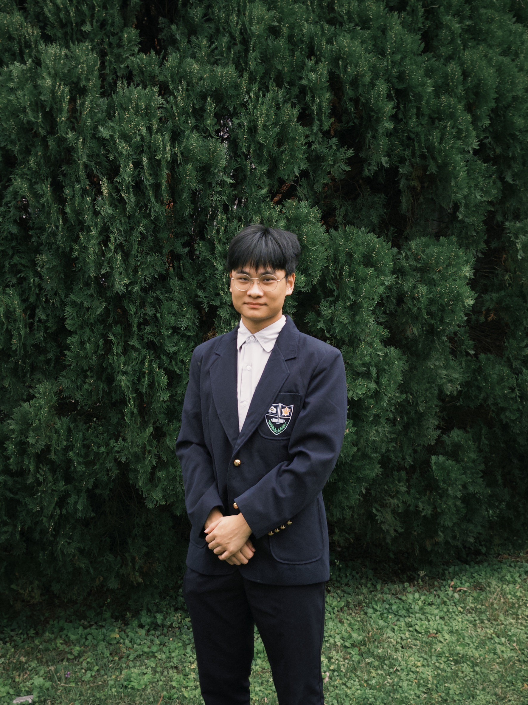
In this project, I served as the team leader. I was responsible for organizing materials, editing videos, adjusting the website, and managing the overall schedule. Throughout the process, I gained interviewing experience, learned practical strategies for teamwork, and improved my methods for collecting and organizing information.
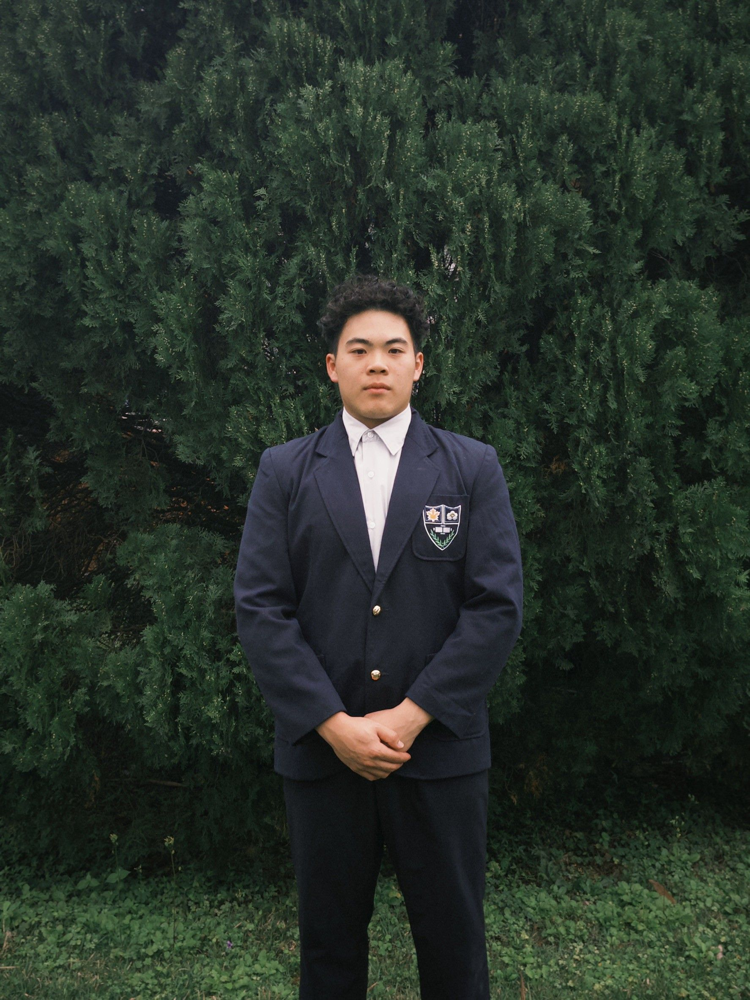
In the International Schools CyberFair project, I was responsible for photography. Through the competition, I came to know Chairman Chi Wen-Hao and learned that his life story is rich and remarkable. I also became more skilled at using photography equipment and gained a deeper understanding of his life.
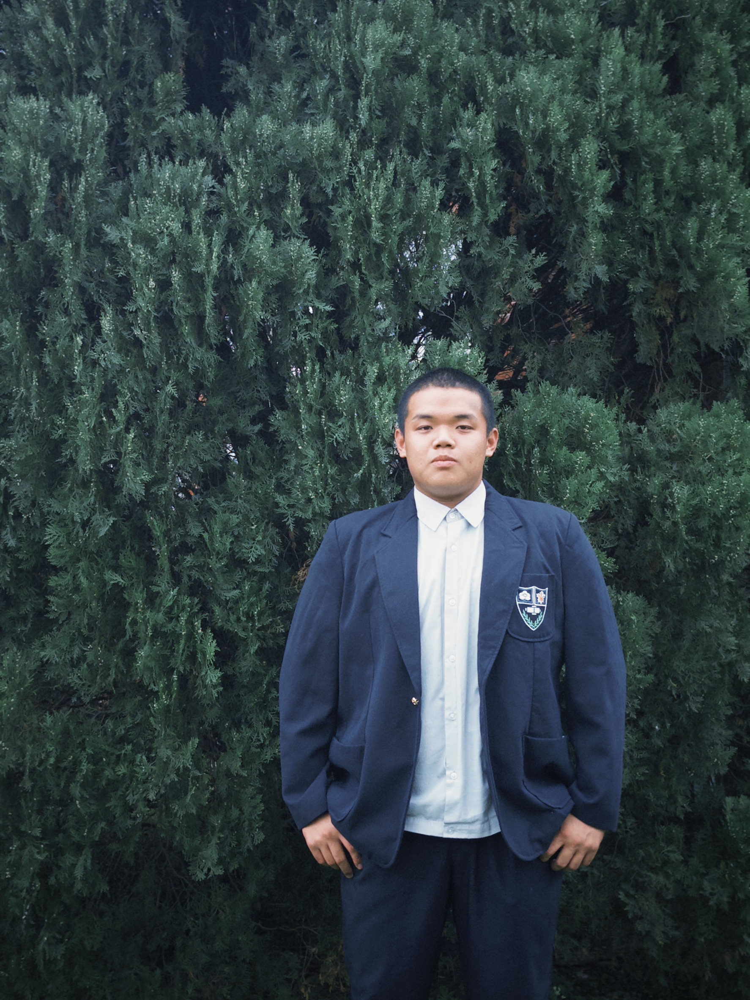
I am very pleased to participate in this Web Expo. I am especially grateful to Mr. Su for trusting us and giving us the opportunity to take over, continue the theme from the previous session, and keep producing a special feature about Mr. Ji Wenhao, the president of the Tamkang Alumni Association. Before this event, I actually knew nothing about President Ji; but through this in-depth research, I not only learned about his remarkable life but was also deeply moved by his philosophy on life.
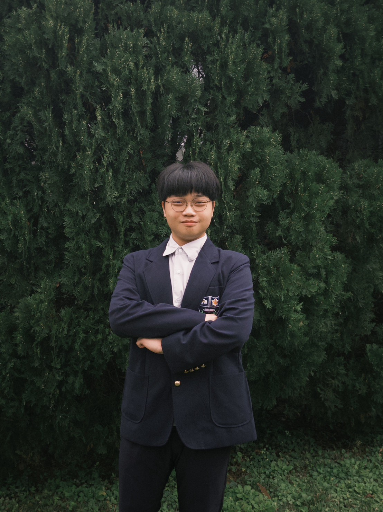
In this International Schools CyberFair project, I served as an editor. From Chairman Chi Wen-Hao, we learned many practical attitudes and approaches for navigating society and handling relationships. I plan to turn what he shared—his experiences and lessons—into a documentary through editing. At the same time, I learned a great deal about how to communicate more effectively with my teammates. Together, we successfully completed this project.
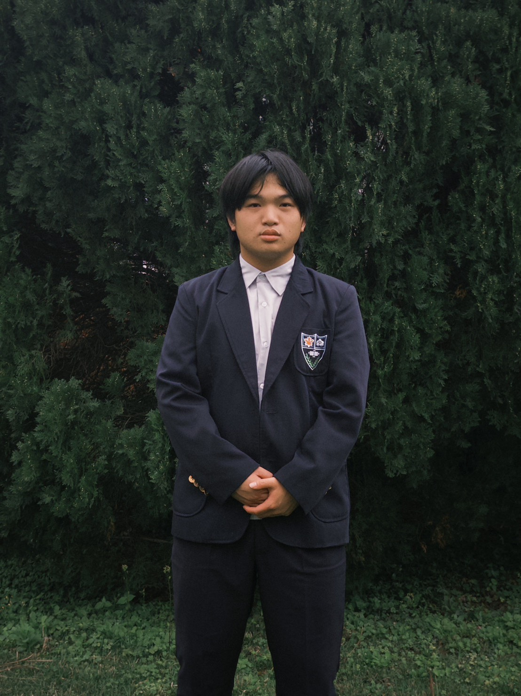
I am very happy to participate in the CyberFair again this year. We chose the “big boss,” Chairman Chi Wen-Hao, as our research subject because his influence in industry and his decision-making mindset have profoundly shaped the direction of society and the economy. Through collecting and organizing information, we hope to understand the journey, values, and management philosophy behind his success. More importantly, we want to learn from his perspective and attitude when facing challenges, so that this research becomes not just a competition entry, but also an important process of personal growth and expanding our horizons.
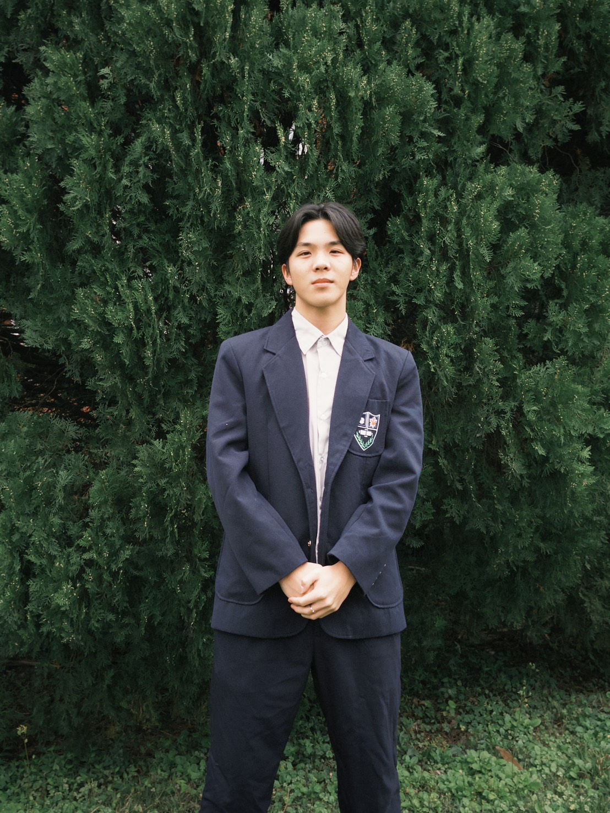
This was my first time participating in the CyberFair, and I was responsible for website production. Through the competition, I learned many stories about Chairman Chi Wen-Hao—his life and many interesting experiences—and I also improved my technical skills in building a website.
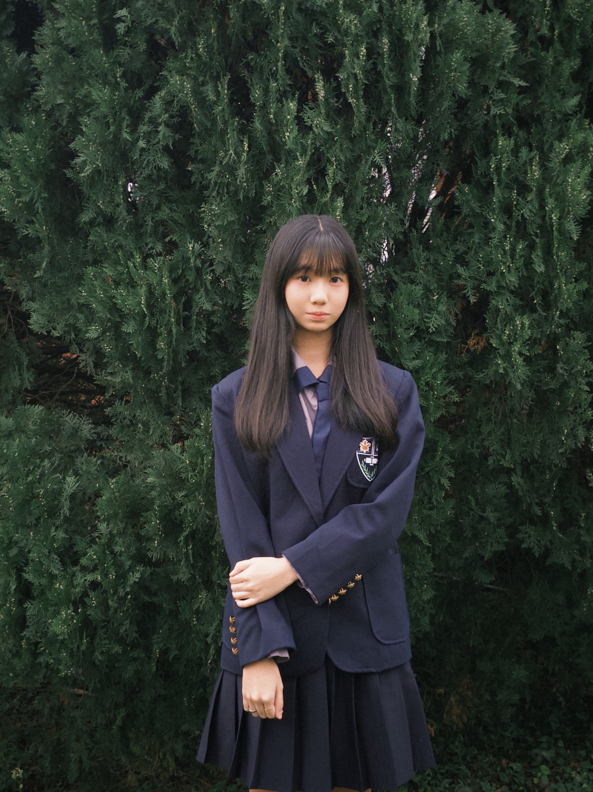
When I first heard about the CyberFair competition, I could not help imagining the mysteries of the online world. During the process, we interviewed Chairman Chi Wen-Hao and listened as he described his life experiences. Indirectly, I came to understand the ups and downs of life, as well as its unique joys. This opportunity also gave me a different perspective. I now cherish more deeply what I see in daily life and the people I care about, and I am creating memories that belong to my own “life record.”
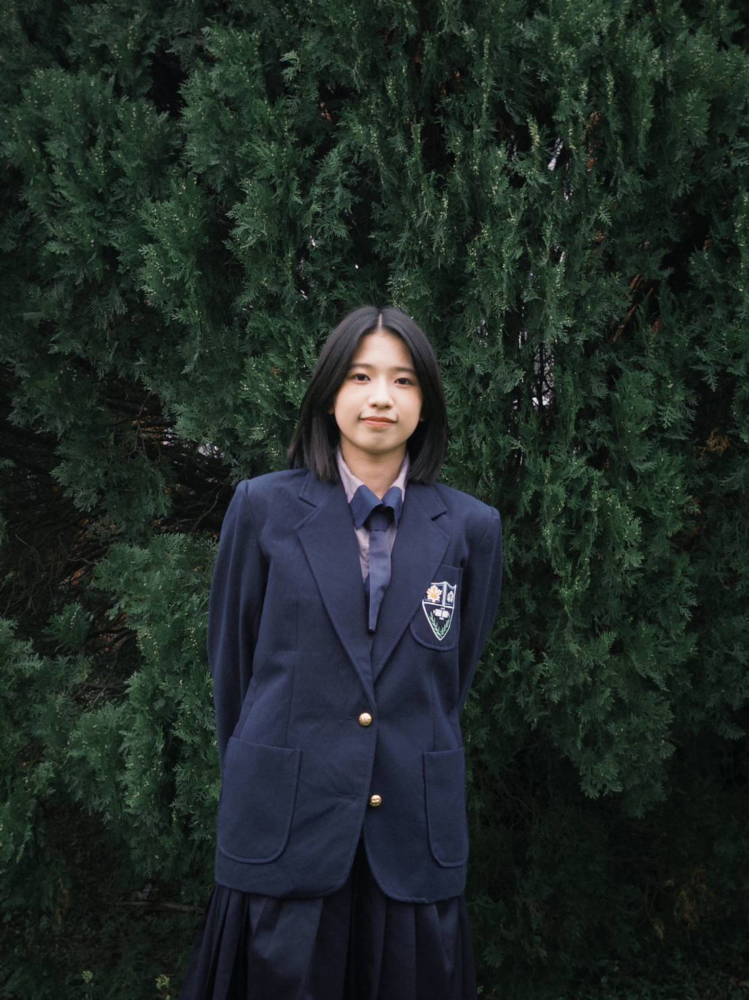
In this CyberFair project, I was responsible for organizing Chairman Chi Wen-Hao’s personal character strengths and his motto. I was deeply inspired by his motto: “Be able to yield, be able to endure, be able to teach, be able to wait.” This wisdom, which transcends generations, is not only the core reason he can move smoothly between leadership roles in both the alumni association and the business world; it also aligns closely with his brand philosophy and life beliefs, becoming a model of conduct worth learning from for younger generations. Through this research, I have come to understand that the key to success lies in holding firmly to one’s principles and remaining composed in difficult circumstances. With gratitude and insight, I will translate what I learned into concrete actions and contribute to our team.
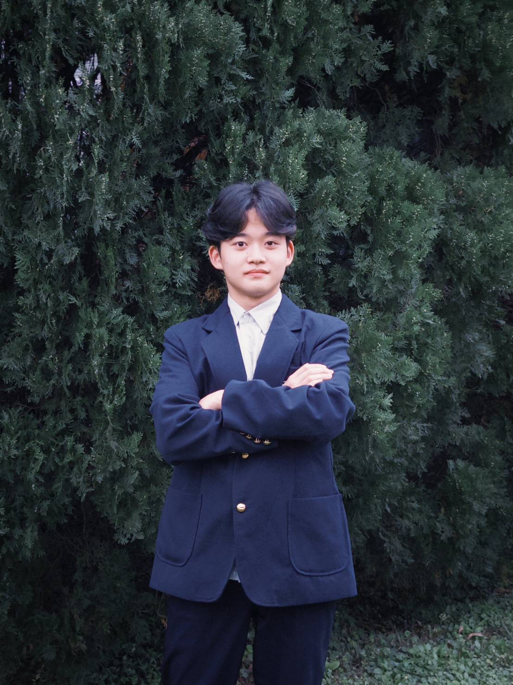
When I was in the first year of high school, I had a shallow understanding of the news about the Internet Expo. In the second year, under the guidance of Su Dad, I participated in the Internet Expo. During the process, we learned about the wonderful life of Chairman Ji Wenhao. He experienced great ups and downs that led to his current success. Spending time with Chairman Ji Wenhao allowed me to deeply feel for the first time what a friendship across generations is. During the competition, I also learned how to observe other people's usual words and actions, design questions that match their way of speaking, and it also made me better at organizing large amounts of information.
From the early stages of website development, our teachers provided strong support and encouragement. They shared practical experience from past participation in the CyberFair, helping us avoid unnecessary trial-and-error. At the same time, they gave us substantial creative freedom, allowing us to experiment fully, learn deeply, and genuinely commit to completing this project.
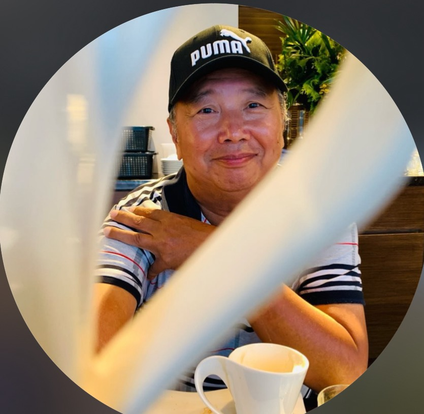
A teacher at Tamkang High School, Mr. Su provided a large collection of valuable photographs and background information about Chairman Chi Wen-Hao throughout the website production process. He also continuously created opportunities for us to connect and communicate with the chairman, making the website content more authentic and complete.
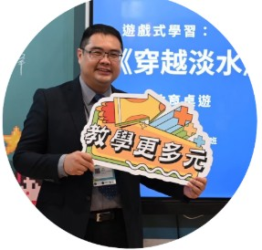
As the Academic Director of Tamkang High School, Director Jiang offered wide-ranging support in overall website production and content editing. Whether through strategic direction or hands-on assistance, his contributions were significant to the completion of this project.
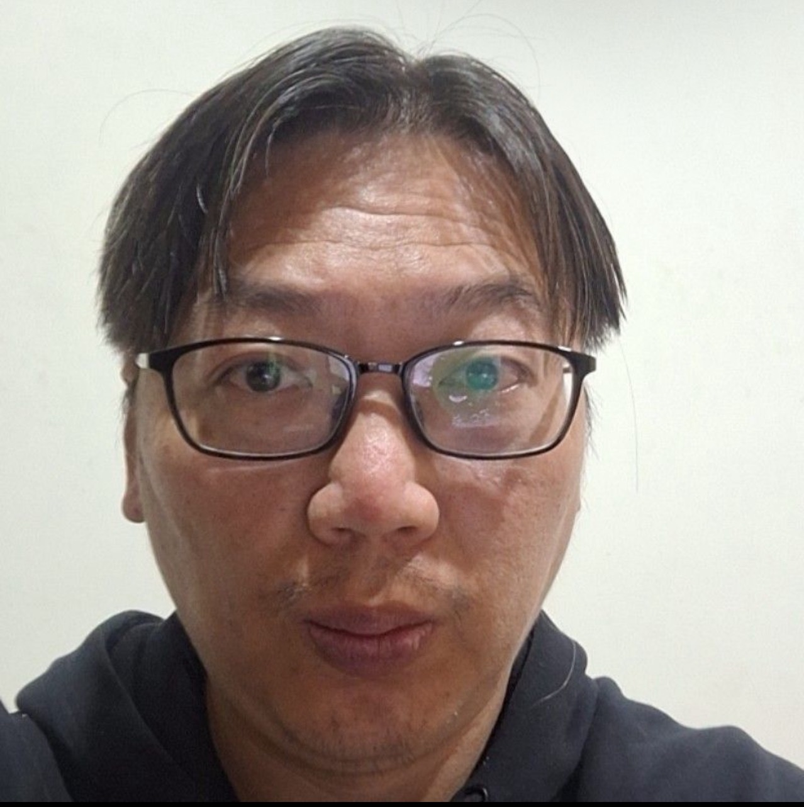
A staff member of the Academic Affairs Office at Tamkang High School, Mr. Wu assisted in organizing and providing relevant materials throughout the production process. His support made the content more complete and gave us a clearer foundation for editing.
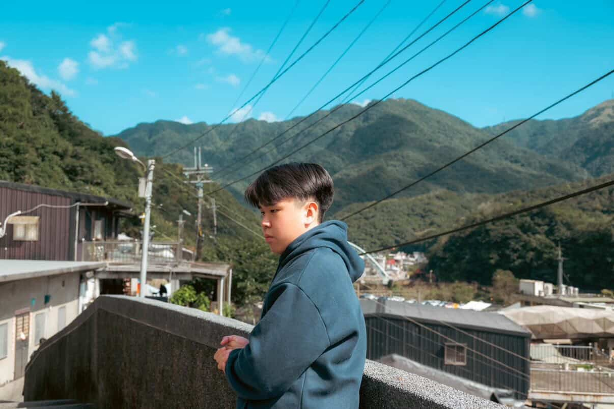
From the Department of Educational Science at Tamkang University, Mr. Xu provided extensive technical guidance and support during the website setup and production process. His help enabled us to resolve implementation issues smoothly and complete the website successfully.